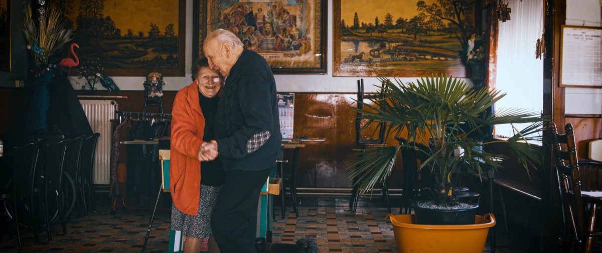
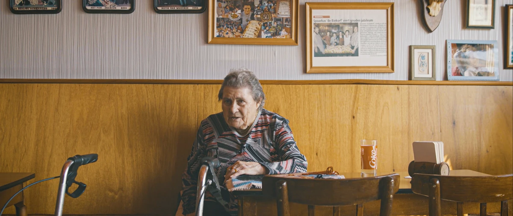
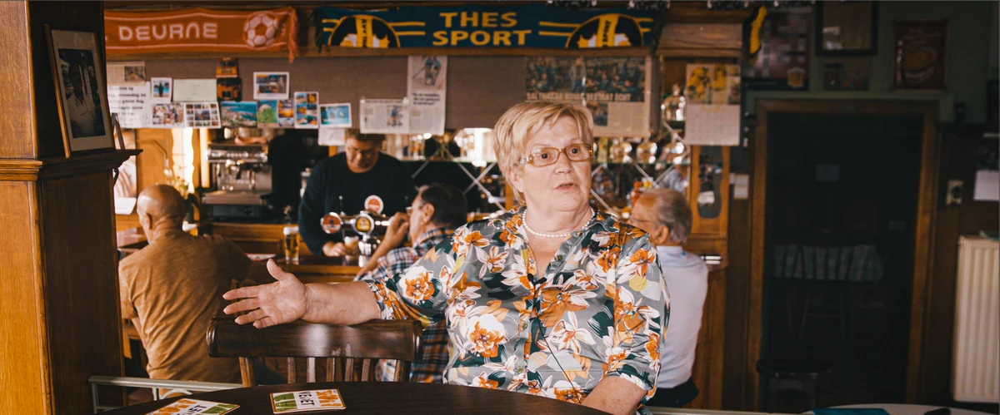

Aflevering 1
Lang leve de Stips!
De Stips, Testelt
Maurice en Vin hielden maar liefst 62 jaar café de Stips open. Op hun 87ste stopten ze, toen de coronacrisis de cafés verplicht deed sluiten.
Documentaire
Een driedelige documentaire
Merodefestival bezoekt drie oude volkscafés van de Merode. Singer-songwriter Lennaert Maes gaat in gesprek met de uitbaters en brengt op het einde een lied voor hen. Zo ontstonden drie verstilde, ontroerende en warmmenselijke portretten van elk zowat 25 minuten, over plaatselijk erfgoed dat ons dreigt te ontglippen. Vin, Maurice, Yvonne en Simone vertellen in hun eigen sappige dialect over de rol van het café in de buurt, over het spaarkaske, geheime liefdes en teerfeesten.

Met deze documentaires vereeuwigt Merodefestival de plekken en hun uitbaters in een filmische en muzikale ode. Vin en Yvonne zijn intussen niet meer onder ons; zij overleden enkele maanden na de opnames. Dat toont hoe belangrijk zulke tijdsdocumenten zijn. We dragen de reeks graag aan hen op.
De Stips, Testelt
Maurice en Vin hielden maar liefst 62 jaar café de Stips open. Op hun 87ste stopten ze, toen de coronacrisis de cafés verplicht deed sluiten.
De Nachtegaal, Ramsel
Von hield café de Nachtegaal open tot haar 92ste, tot ze in september 2022 overleed.
Café Moderne, Deurne
Simone is 71 en houdt café Moderne nog altijd open. Het is de plek waar ‘Duune’ samenkomt, jong en oud, en het enige van de vroeger dertien cafés in Deurne dat nog bestaat.


Met steun van Cultuur & Erfgoed de Merode, Landschapspark de Merode en de Vlaamse overheid (kunsten & erfgoed).